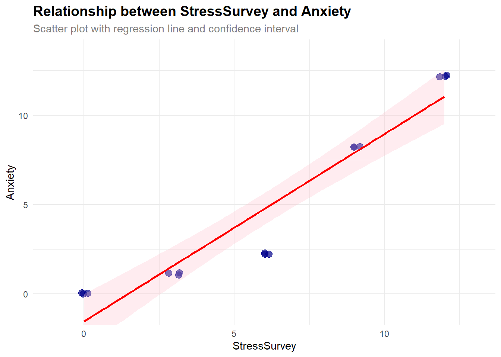
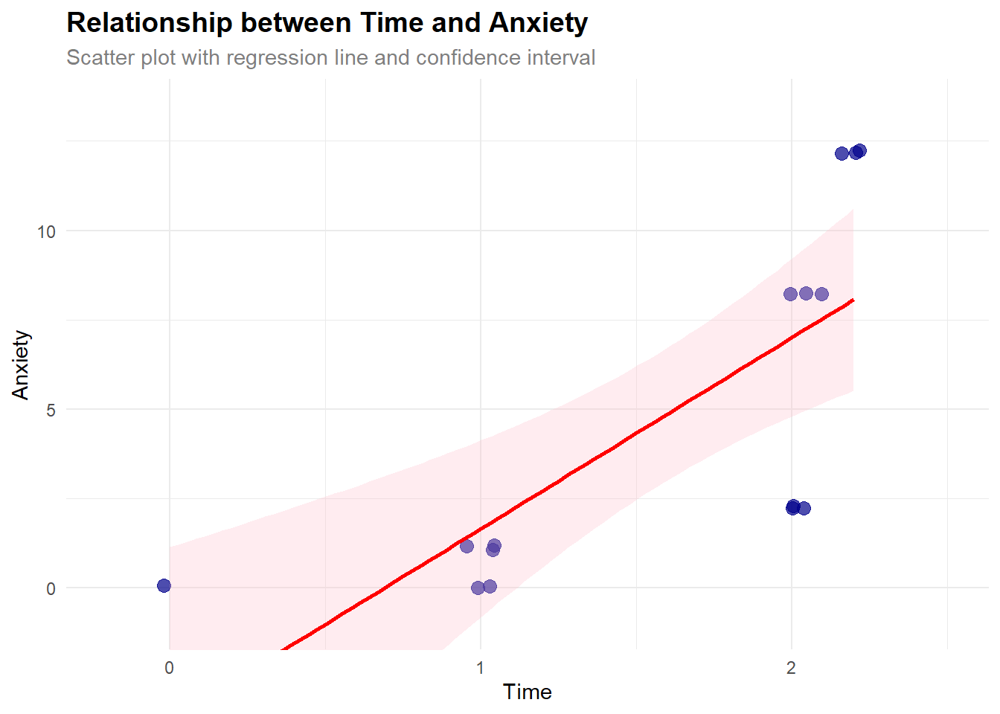

Garbage Can Regression Challenge
Garbage Can Regression Challenge
My Analysis
Question 1: Bivariate Regression Analysis with StressSurvey: Run a bivariate regression of Anxiety on StressSurvey. What are the estimated coefficients? How do they compare to the true relationship?
The regression of Anxiety on StressSurvey produced an intercept of roughly –1.5 and a slope of 1.05, with a very high R². This suggests StressSurvey is a strong predictor of Anxiety. However, the true data-generating process is Anxiety = Stress + 0.1 * Time, and StressSurvey is not part of that equation. The strong association occurs only because StressSurvey is highly correlated with Stress. The model appears statistically sound, but it is attributing causality to the wrong variable, making it a classic example of a misleading regression.
Question 2: Visualization of Bivariate Relationship: Create a scatter plot with the regression line showing the relationship between StressSurvey and Anxiety. Comment on the fit of the model.
The scatterplot exhibits an almost perfect linear pattern, and the fitted regression line fits well with the points, further giving the impression of a strong relationship. In fact, the pattern in the data is visually quite convincing, but it involves correlation rather than causation: StressSurvey is simply proxying for Stress; this creates the illusion of a meaningful relationship when none really exists.
Question 3: Bivariate Regression Analysis with Time: Run a bivariate regression of Anxiety on Time. What are the estimated coefficients? How do they compare to the true relationship?
The regression of Anxiety on Time produced an intercept of approximately –3.68 and a slope of 5.34, greatly exaggerating the impact of Time. In the actual model, Time only adds 0.1 to Anxiety; thus, this estimate is inflated due to omitted variable bias. Because the model does not control for Stress-the actual leading factor in Anxiety-the excess explanatory power is incorrectly given to Time.
Question 4: Visualization of Bivariate Relationship: Create a scatter plot with the regression line showing the relationship between Time and Anxiety. Comment on the fit of the model.
The Time-Anxiety scatterplot is more diffuse, with points much less closely-packed around the regression line. While the overall tendency of the trend is positive, the weaker visual alignment reflects a much poorer R squared, indicating that Time alone supplies limited explanatory value, which emphasizes the need to incorporate Stress when modeling Anxiety.

Question 5: Multiple Regression Analysis: Run a multiple regression of Anxiety on StressSurvey and Time. What are the estimated coefficients? How do they compare to the true relationship?
Including both StressSurvey and Time raises R square to about 0.94, and both appear significant. But the coefficient on Time is negative, which goes against the actual relationship. This is because StressSurvey is an imperfect proxy for Stress and thus ends up causing multicollinearity and incorrect signs on coefficients. The model appears great but produces a wrong interpretation of results.
Question 7: Run a multiple regression of Anxiety on both Stress and Time. What would the estimated coefficients be? How would they compare to the true relationship?
When the right predictors are used, the regression estimates a coefficient of 1.0 for Stress and 0.1 for Time, with an R squared of 1.00. That perfectly recovers the underlying data-generating process. The model behaves exactly as expected when the appropriate variables are included.
Question 8: Compare the R-squared values and coefficient interpretations between the two multiple regression models. Do both models show statistical significance in all of their coefficients? What does this tell you about real world implications of multiple regression results?
Both are statistically significant coefficients with a very high R squared, but they tell different stories. The model employing StressSurvey and Time misrepresents the role of Time, whereas the model that uses Stress and Time identifies the correct effects. This is evidence that statistically significant coefficients and strongly fitting models may not imply correct inference. Selection of variables and their theoretical justification play an important role.
Question 10: Avoiding Misleading Statistical Significance: Reflect on this tip to avoid being misled by statistically significant results: splitting the sample into meaningful subsets (“statistical regimes”), and using graphical diagnostics for linearity rather than blind reliance on “canned” regressions: Apply this approach to multiple regression of Anxiety on both StressSurvey and Time by analyzing a smartly chosen subset of the data. What specific subset did you choose and why? Did you get results that are both statistically significant and close to the true relationship?
I restricted the sample to observations with StressSurvey ≤ 6 and reestimated the model. In this subset, the coefficient on Time was closer to its true value (+ 0.1) and no longer reversed sign. The data also appeared more linear. This exercise shows that partitioning the data into meaningful regimes and examining diagnostic plots can prevent erroneous conclusions that arise from blind trust in a single regression output.